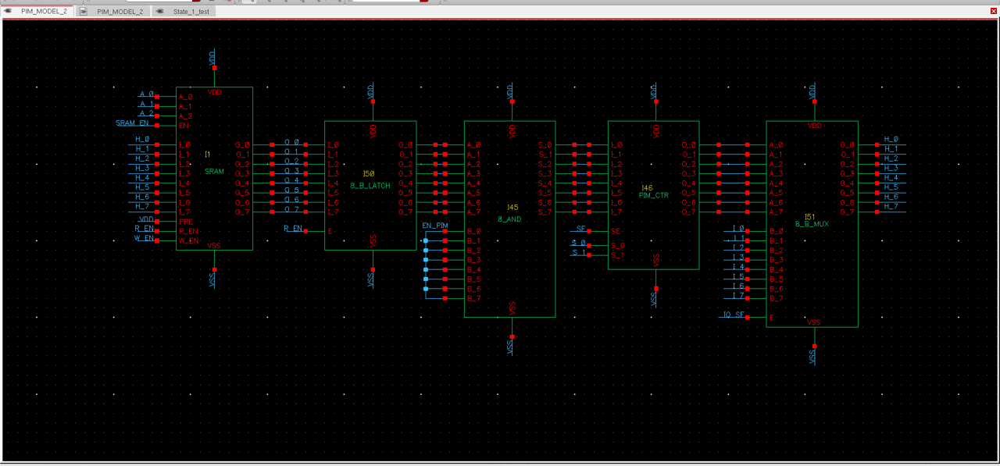

PIM Architecture Design using 90nm CMOS
Award-winning project at the 1st Smart City IC Design Competition
Project Objective
Design a Processing‑In‑Memory (PIM) architecture using 90 nm CMOS technology, capable of processing data directly within the memory, minimizing bus accesses and accelerating data processing for smart city applications.
Design Components
- PIM architecture with SRAM integrated processing logic
- Signal processing capabilities at each memory cell
- Tool used: Cadence Virtuoso
Operation Mechanism & Simulation
- Design the schematic of a PIM cell combining SRAM and compact ALU
- Full-custom layout in 90 nm CMOS technology with area optimization
- Cadence simulation to verify computation and timing
- Integrate multiple cells into a block and perform parallel computations
üèÜ Awards
This project received an Encouragement Award at the 1st Smart City IC Design Contest – 2024, jointly organized by HCMUTE and partners.
It was one of the most innovative projects in Processing-In-Memory architecture, with practical applications for smart city and energy-saving systems. The team of 4 students passed several rigorous evaluation rounds and was honored at the “Outstanding Young Faces of HCMUTE 2025” ceremony.

The team receiving the Encouragement Award at the Smart City IC Design Contest – HCMUTE, 2024